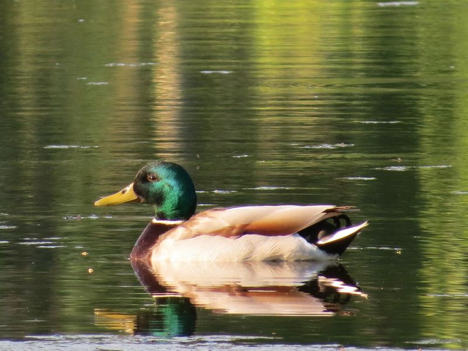

Stockente
Anas platyrhynchos
Größte und häufigste Schwimmente im Gebiet. Sucht ihre Nahrung gründelnd. Stammutter unserer Hausente. Brütet alljährlich in mehreren Paaren am Riedlehrpfad. Nur strenger Winterfrost kann die Vögel kurzzeitig vertreiben. Der laute Quak-Ruf kommt vom Weibchen.